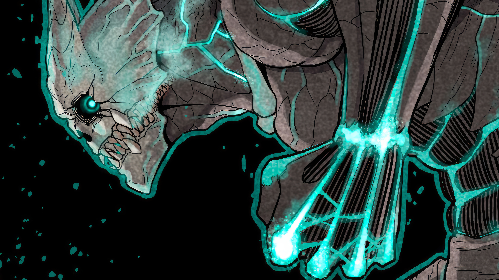

BIG 3 ANIME
BLEACH
The series adapts Kubo's manga with the main story arcs and introduces anime exclusive ones.
In Karakura Town, high school student Ichigo Kurosaki becomes a substitute Soul Reaper (死神, Shinigami,
literally, "Death God"), when Rukia Kuchiki risks her life to protect him from a Hollow.
Rating : 7.5 ★
ONE PIECE
The series focuses on Monkey D. Luffy—a young man made of rubber after unintentionally eating a Devil
Fruit—who sets off on a journey from the East Blue Sea to find the deceased King of the Pirates Gol D. Roger's
ultimate treasure known as the "One Piece", and take over his prior title.
Rating : 8.2 ★

NARUTO
A powerful fox known as the Nine-Tails attacks Konoha, the hidden leaf village in the Land of Fire, one
of the Five Great Shinobi Countries in the Ninja World. In response, the leader of Konoha and the Fourth Hokage,
Minato Namikaze, at the cost of his life, seals the fox inside the body of his newborn son,
Naruto Uzumaki, making him a host of the beast.
Rating : 8.5 ★
POPULAR ANIME
FULLMETAL ALCHEMIST BROTHERHOOD
Abandoned by their father as kids, two young brothers, Edward and Alphonse Elric lived with their
mother in a small town called Resembool.
After losing their mother to a terminal illness, they try to resurrect her using alchemy - a science which allows
you to transform physical matter from one form to another.
Rating : 9.1 ★

DEMON SLAYER
Tanjiro Kamado is a kind-hearted and intelligent boy who lives with his family in the mountains. After
his father's death, he became his family's breadwinner
and travels to the nearby village to sell charcoal. One day, Tanjiro comes home to discover his
family was slaughtered by a demon. His sister Nezuko is the sole survivor of the incident;
though she has been transformed into a demon .
Rating : 8.6 ★
Dr.STONE
Several thousand years after a mysterious phenomenon that turns all of humanity to stone, the
extraordinarily intelligent, science-driven boy, Senku Ishigami, awakens.
Facing a world of stone and the total collapse of civilization, Senku makes up his mind to use science to rebuild
the world. Starting with his super strong childhood friend Taiju Oki, who awakened at the same time, they will
begin to rebuild civilization from nothing...
Rating : 8.1 ★

JUJUTSU KAISEN
The story revolves around Yuji Itadori, a high school student with exceptional physical
abilities. After the death of his grandfather, Yuji finds himself drawn into the world of Jujutsu
Sorcery when he comes into contact with a cursed object—a rotting finger imbued with an ancient curse.
Unbeknownst to him,
swallowing this cursed finger leads to his possession by Ryomen Sukuna, a powerful and evil
Cursed Spirit from the past.
Rating : 8.6 ★

ATTACK ON TITAN
For the past 100 years, mankind has been living peacefully behind
giant walls that protect them from the Titans. One day, a super huge Titan breaches the wall, lets
inside a horde of Titans who killed everyone including Eren's Mother, and forces Eren to retreat to
the inner walls. Feeling vengeful, Eren joins the scouting legion in order to wipe all Titans from the world.
Rating : 9.1 ★
DEATH NOTE
After an intelligent yet cynical high school student begins to cleanse the world from evil with
the help of a magical notebook that can kill anyone whose name is written on it, international
authorities call upon a mysterious detective known as "L" to thwart his efforts.
Rating : 8.9 ★
BLACK CLOVER
Asta, a young orphan who is left to be raised in an orphanage alongside his fellow orphan,
Yuno. While everyone is born with the ability to utilize mana in the form of magical power,
Asta with no magic instead focuses on physical strength. Conversely, Yuno was born as a prodigy with
immense magical power and the talent to control wind magic.
Motivated by a desire to become the next Wizard King.
Rating : 8.2 ★

ONE PUNCHMAN
It tells the story of Saitama, an independent superhero who
can defeat any opponent with a single punch due to having trained himself to his peak condition,
grows bored from a lack of challenge, setting out to find powerful opponents,
while making allies of other heroes as well.
Rating : 8.7 ★
HELL"S PARADISE
A squad of prisoners and their guards are sent to investigate a mysterious island.
They get stranded there and must rely on each other to survive the island's mysterious and monstrous residents
Rating : 8.1 ★

KAIJU NO.8
Kaiju No. 8 is set in a world in which monsters named kaiju regularly cause disasters. Japan has the highest
rate of kaiju attacks in the world, therefore in order to combat them it establishes the Anti-Kaiju Defense Force.
childhood friends Kafka Hibino and Mina Ashiro both vow to become members of the Defense Force to fight
kaiju together.
Rating : 8.4 ★
SOLO LEVELING
In a world where hunters — human warriors who possess supernatural abilities —
must battle deadly monsters to protect mankind from certain annihilation, a notoriously weak
hunter named Sung Jinwoo finds himself in a seemingly endless struggle for survival. One day,
after narrowly surviving an overwhelmingly powerful double dungeon that nearly wipes out his entir
e party, a mysterious program called the System chooses him as its sole player and in turn, gives him
the unique ability to level up in strength.
Rating : 8.3 ★
VINLAND SAGA
Thorfinn is a young Iceland villager who aims to participate in wars like his retired father,
Thors. He sneaks onto his father's ship while at the same time mercenaries are hired to kill
Thors for abandoning the forces. They are attacked by Askeladd's forces and, to prevent the
deaths of his son and his men, Thors surrenders and is killed. Enraged, Thorfinn starts training
and working as a mercenary for the Vikings for several jobs during his growth as a teenager in
order to get his proper revenge on Askeladd.
Rating : 8.8 ★